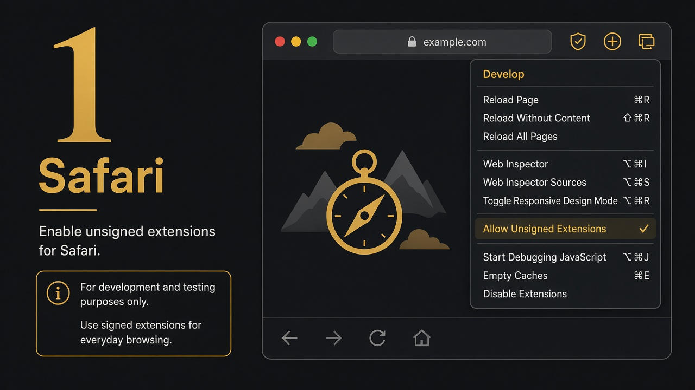
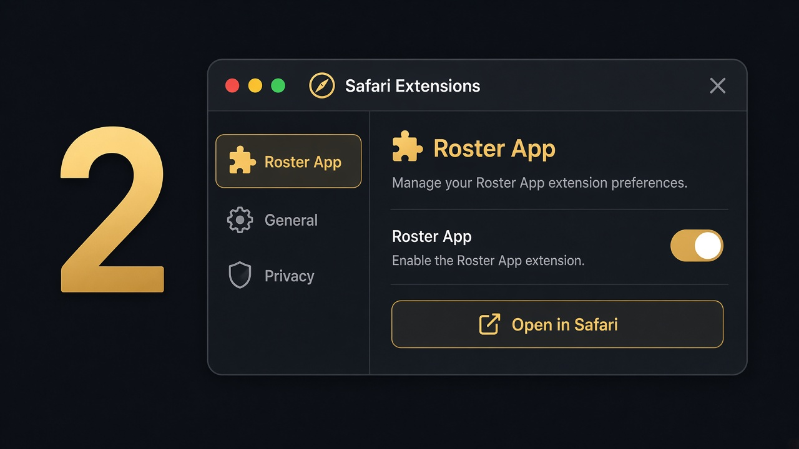

Download Safari source package
safari-web-extension-converter, then send you the .app. Everyday users only need the enable steps below.If you don’t see Develop: Safari → Settings → Advanced → “Show features for web developers”.


safari-roster-app-1.6.19-source.zipxcrun safari-web-extension-converter /path/to/unzipped-folder